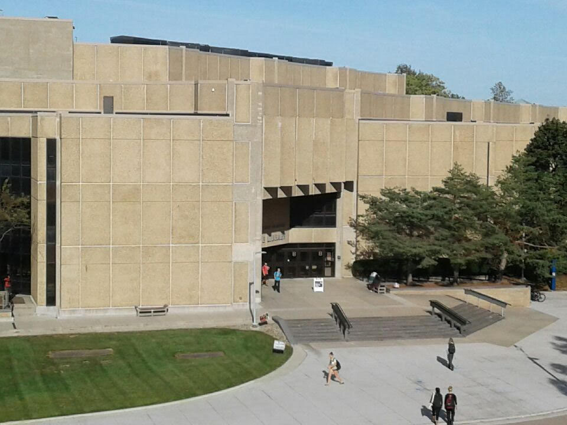
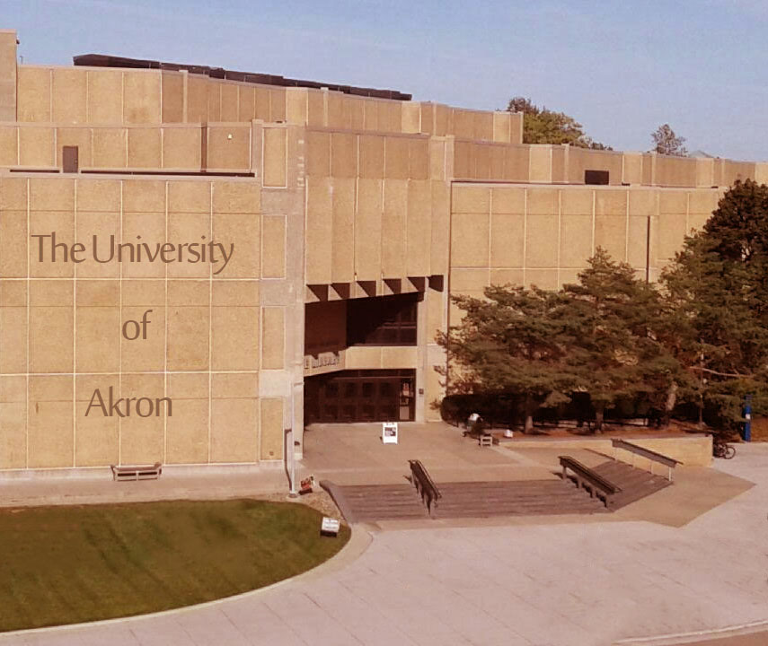
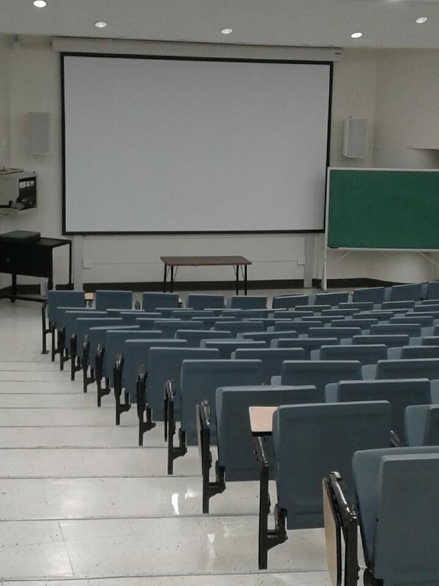
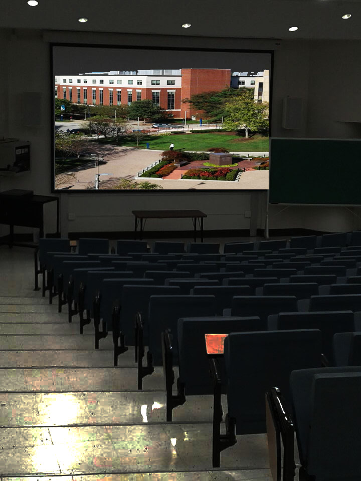

From this Photoshop project, I learned a lot about image quality and editing. I learned how to enhance the quality of pictures and images. Photoshop editing tools are impressive and powerful. I spent over 12 hours a day learning how to use Photoshop. You must have patience and determination when learning new technology tools. For the 21st Century, it's all about the implementation of technology into the classroom. It is our job as teachers to ensure that students to be equip with the 21st Century skillset needed to become productive citizens in society.
| Digital Camera: | SAMSUNG On5, 8 MP, f/2.2, Autofocus, LED Flash, 1080p@30fps |
|---|---|
| Hardware: | Toshiba Satellite MQ01ABF050, 500GB, 2.5" 7mm, 5400RPM, AMD A8 |
| Software: | Adobe Photoshop CC 2017 |
I took this picture with my SAMSUNG On5 cellphone standing on the outside second floor balcony of Zook Hall. The picture original size was 960 x 720. The first thing I did was resize the picture to 480.067 x 404.267. The next thing I did was use the spot healing brush tool to remove the two head stones from the grass out front of the library. I also used the spot healing tool to remove the people walking, the tree shadows on the concrete and the flyers from the windows of the library's main doors. The last thing I did with this photo was add the text, "The University of Akron" on the front wall of the library. They call this adding another layer to the photo. I cropped the left side of the photo to remove the window portion of the library that was visible. I had to tweak both the cyan and the yellow color balance alittle to bring out more definition, clarity and color.
| Before | After |
|---|---|
|  |  |
I took this picture of an empty lecture hall at the University of Akron with my SAMSUNG On5 cellphone. The picture original size was 720 x 960. The first thing I did was resize the picture to 269.966 x 359.955. The next thing I did was open a new window with a picture of the Arts and Science building at the Univesity of Akron. Then I used the transform selection tool to resize the picture so that it fits inside the projector screen on the lecture hall photo. I just added another layer to get this effect. To edge up around the projector screen, I used the magic eraser tool to help line everything up. The last thing I did to this photo was to give it the feel as if someone dimmed the lights and started playing a University of Akron documentary. To accomplish this effect, I had to set the brightness to 30 and I changed the contrast to 17. I also checked the option to use legacy.
| Before | After |
|---|---|
|  |  |